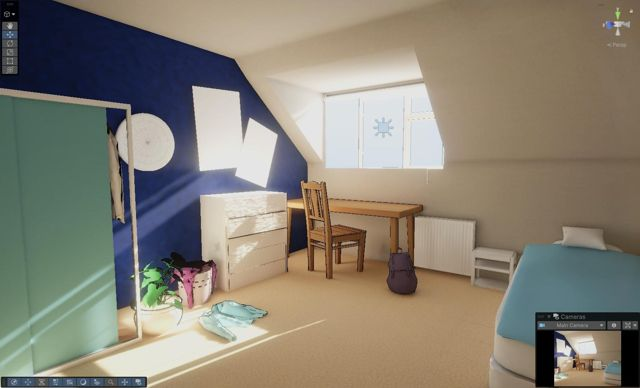
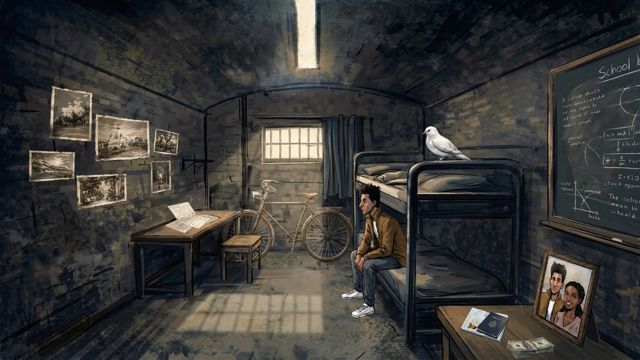

We All Breathe The Same Air · Like Dust deel 2
De vier hoofdstukken bestaan al als film met interactie. Wat ontbrak, is de kamer die het verhaal aan elkaar knoopt: de plek waar Sam uiteindelijk terechtkomt, rustig en gewoon, terwijl het verhaal zwaar is. Hieronder vier richtingen in Three.js, allemaal met dezelfde stift- en inktlook, het palet van de hoofdstukken en dezelfde regel: een ding in de kamer opent een hoofdstuk, en de kamer verandert als je terugkomt.
2.5D · uit het After Effects-ontwerp
De geschilderde kamer uit room 2.psd, laag voor laag op diepte gezet. Wat je nog niet zag, is een krijtschets; na het hoofdstuk loopt de kleur er als inkt in.
3D · de kamer uit de briefing
De tienerkamer bij het pleeggezin (Room.png): blauwe schuine wand, bureau onder de dakkapel, bed. Toon-shaded met bevende stiftlijnen, arcering in de schaduw en kleur die net naast de lijn valt.
Abstract interactiemodel · transformatie
Geen kamer maar lucht: "We all breathe the same air" en "Like dust" letterlijk. Houd ingedrukt om in te ademen, laat los om uit te ademen. Wat je uitblaast, wordt het volgende beeld.
3D · papier en karton
De kamer als boek op tafel. Sla het open en de kamer vouwt omhoog uit het papier, met de spullen als uitgesneden karton. Elke spread is een hoofdstuk: links Sams zin, rechts wat omhoog klapt.

Briefing (old/Brief Like Dust 2): het verhaal wordt verteld vanuit de kamer bij het pleeggezin. Toon-shaded tienerkamer, dingen die hoofdstukken openen, licht van avond naar ochtend, oude foto's en links naar deel 1. Basis voor variatie 2.

After Effects-project (001): een donkere geschilderde kamer met stapelbed, duif, fiets, brief, foto van thuis, paspoort en geld als losse lagen, plus green-screen-clips van Sam. Eindigt in witte mist. Basis voor variaties 1, 3 en 4.
Testen: toets 1 t/m 4 zet een hoofdstuk op "gezien", 0 of ↺ wist de voortgang. Elke variatie onthoudt zijn eigen voortgang in de browser.
Werkt los vanaf schijf (dubbelklik index.html). Via een lokale webserver of Netlify ziet de kamer ook wanneer een hoofdstuk echt is afgelopen; via file:// telt een hoofdstuk als gezien na 15 seconden kijken.
Deze map moet naast "All hoofdstuken met interactie 1-4" blijven staan, want de kamer opent de hoofdstukken daaruit.